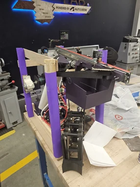

Team capstone · Aug–Dec 2025
Stabilized camera rig
A height-adjustable camera payload for a quadruped robot. My work included concept selection, gimbal CAD and drawings, and engineering analysis.
Mechanical design, fabrication, and systems integration across personal aircraft, team robotics, and professional UAV work.
A height-adjustable camera payload for a quadruped robot. My work included concept selection, gimbal CAD and drawings, and engineering analysis.

Iterative airframe development, custom landing gear, and flight-control integration—from foamboard aircraft to a reinforced flying wing.
Professional multirotor integration and documentation, alongside a Python tool for estimating aircraft performance from vehicle and mission inputs.

A custom multirotor combining printed components, modular interfaces, integrated flight electronics, and autopilot configuration.
These three documented configurations form one UAV development story. Follow the full design progression →

Onshape layout and landing-gear design, foamboard fabrication, rubber-band suspension, and autopilot integration for a low-budget fixed-wing aircraft.

A conventional tail, greater wing area, and a servo-steered tailwheel addressed control authority, wing loading, and propeller ground clearance.
A new flying-wing layout with carbon-fiber reinforcement explored a different airframe configuration to address the preceding aircraft's high cruise-throttle demand.
Earlier team projects spanning aircraft restoration, mechanisms, and competition hardware.

Custom frame design and fabrication using carbon-fiber plates and printed mounting/landing components. Part of a team aircraft with UGV deployment capability.

Mechanism CAD, fabrication, Arduino programming, and actuator integration for a timed robotics task. Scissor-lift and retrieval mechanisms connected mechanical design to control.

Design, machining, and assembly of lightweight mounting plates for a competition robot. Fiberglass plates and standard hardware connected armor to the chassis.

Restoration of a largely disassembled aircraft: SolidWorks motor and landing-gear mounts, updated flight hardware, PX4 configuration, and QGroundControl setup.
Interested in how I approach mechanical design and systems integration?
Get in touch →